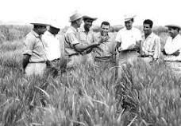

Dr. Norman Borlaug, born on March 25, 1914, and died on September 12, 2009, was an American agronomist and humanitarian who is often referred to as the "Father of the Green Revolution." He was awarded the Nobel Peace Prize in 1970 for his contributions to increasing agricultural productivity and combating world hunger.
Borlaug's work focused on developing high-yielding and disease-resistant wheat varieties. He believed that improving crop productivity and implementing modern agricultural practices could alleviate poverty and hunger in developing countries. His research and efforts led to significant advancements in agricultural science and technology.
During the mid-20th century, Borlaug introduced his improved wheat varieties to countries such as Mexico, India, and Pakistan. By applying his methods, these nations experienced substantial increases in crop yields, which helped avert widespread famine and saved millions of lives. His approach involved the use of hybrid seeds, improved irrigation techniques, and the application of fertilizers and pesticides.
Through his groundbreaking work, Dr. Borlaug demonstrated that agriculture could be a powerful tool in combating hunger and improving livelihoods. He also emphasized the importance of sustainable farming practices and the need to protect natural resources for future generations.
Dr. Norman Borlaug's contributions to agriculture and his dedication to addressing global food security challenges have had a lasting impact. His legacy continues to inspire scientists, policymakers, and individuals working towards ensuring food availability and reducing hunger worldwide.

Dr. Borlaug life journey
1914 - Born in Cresco, Iowa
1933 - Leaves his family's farm to attend the
University of Minnesota, thanks to a Depression era program known as the
"National Youth Administration"
1935 - Has to stop school and save up more money. Works
in the Civilian Conservation Corps, helping starving Americans. "I saw
how food changed them", he said. "All of this left scars on me."
1937 - Finishes university and takes a job in the US
Forestry Service
1938 - Marries wife of 69 years Margret Gibson. Gets
laid off due to budget cuts. Inspired by Elvin Charles Stakman, he
returns to school study under Stakman, who teaches him about breeding
pest-resistent plants.
1941 - Tries to enroll in the military after the Pearl
Harbor attack, but is rejected. Instead, the military asked his lab to
work on waterproof glue, DDT to control malaria, disinfectants, and
other applied science.
1942 - Receives a Ph.D. in Genetics and Plant Pathology
1944 - Rejects a 100% salary increase from Dupont,
leaves behind his pregnant wife, and flies to Mexico to head a new plant
pathology program. Over the next 16 years, his team breeds 6,000
different strains of disease resistent wheat - including different
varieties for each major climate on Earth.
1945 - Discovers a way to grown wheat twice each
season, doubling wheat yields
1953 - crosses a short, sturdy dwarf breed of wheat
with a high-yeidling American breed, creating a strain that responds
well to fertilizer. It goes on to provide 95% of Mexico's wheat.
1962 - Visits Delhi and brings his high-yielding
strains of wheat to the Indian subcontinent in time to help mitigate
mass starvation due to a rapidly expanding population
1970 - receives the Nobel Peace Prize
1983 - helps seven African countries dramatically
increase their maize and sorghum yields
1984 - becomes a distinguished professor at Texas A&M
University
2005 - states "we will have to double the world food
supply by 2050." Argues that genetically modified crops are the only way
we can meet the demand, as we run out of arable land. Says that GM crops
are not inherently dangerous because "we've been genetically modifying
plants and animals for a long time. Long before we called it science,
people were selecting the best breeds."